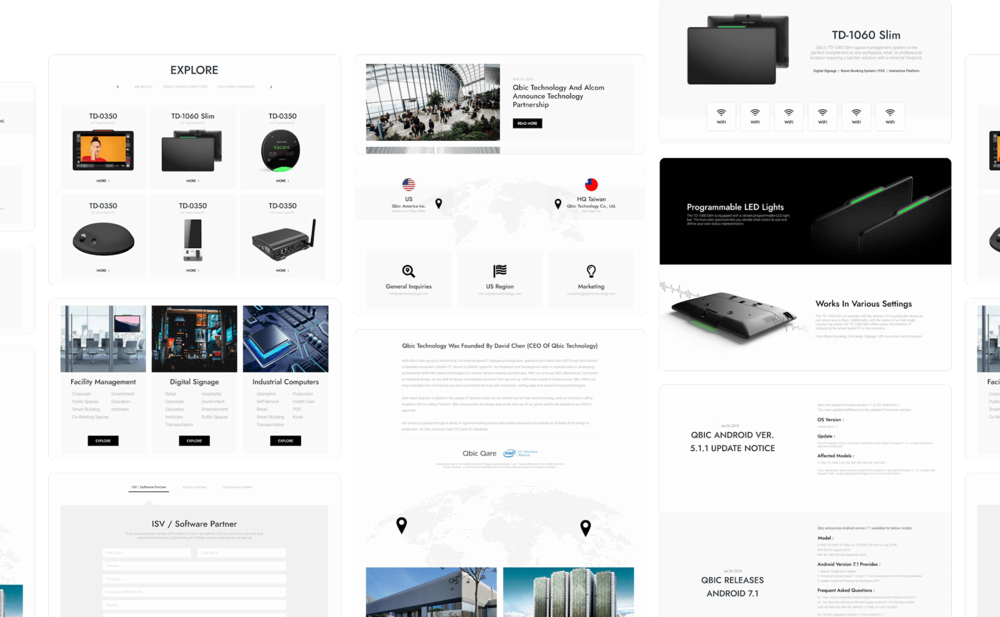

Home
Home
QBIC QBIC QBIC QBIC QBIC QBIC QBIC
QBIC QBIC QBIC QBIC QBIC QBIC QBIC
請使用 1024px 以上的顯示器來預覽．
QBIC QBIC QBIC QBIC QBIC QBIC QBIC
QBIC QBIC QBIC QBIC QBIC QBIC QBIC
奠定品牌視覺、制定系統規範
QBIC 以 OEM (Original Equipment Manufacturer) 代工服務為主要業務，多元的產品系列涵蓋平板電腦、設施管理、IPC、AI、醫療健保等多項領域，在專業代工服務上已有重要的一席之地。
此次專案目標為傳統 B2B 的舊式頁面進行改版，放大企業優勢、調整資訊編排並加入微動態減少 B2B 的距離感，也將保留原先風格並優化功能，經重新設計後提升使用者體驗。
BEFORE
舊官網對於文字編排上太過於冗長，文字大小缺乏一致性，令使用者閱讀時難以掌握重點，也因閱讀不便，容易縮短網頁停留時間。
AFTER
編排重整後，為官網制定全新系統規範，包括調整字型、視覺顏色、間隔及縮排，讓使用者能清楚辨別每個區域的特點劃分。
GRID LAYOUT

BUTTON
2px
圓角矩形

FONT
Jost
Medium
Roboto
Light
COLOR
#000000
BANNER

CARD
產品展示
MOBILE MOBILE MOBILE MOBILE MOBILE
MOBILE MOBILE MOBILE MOBILE MOBILE
MOBILE MOBILE MOBILE MOBILE MOBILE
MOBILE MOBILE MOBILE MOBILE MOBILE
PAGINATION
